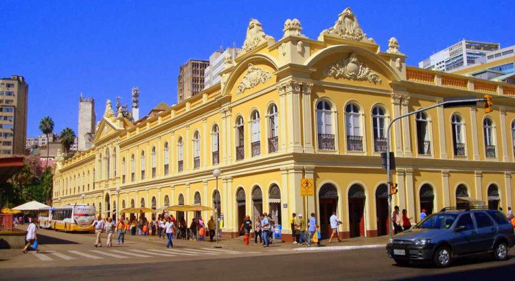

Pontos Turísticos de Porto Alegre
Parque Farroupilha (Redenção)

Um dos maiores e mais conhecidos parques da cidade, ideal para passeios e atividades ao ar livre.
Mercado Público de Porto Alegre
Um centro de compras histórico, famoso por sua arquitetura e variedade de produtos.
Usina do Gasômetro

Um centro cultural localizado às margens do Guaíba, oferecendo uma bela vista do pôr do sol.
Jardim Botânico de Porto Alegre

Um belo jardim botânico com uma grande variedade de plantas e trilhas para caminhada.